<section>
  
  
  
  <div class="filter-label" *ngIf="!disabledFilter">
    <h4 *ngIf="lSLanguage != '1'">Selecione as opções de filtro</h4>
    <h4 *ngIf="lSLanguage == '1'">Select filter options</h4>
  </div>
  <div class="filter-body" *ngIf="!disabledFilter">
    <div class="filter-content">
      <div class="select filter-option">
        <select [(ngModel)]="filterOption" name="slct" id="slct">
          <option *ngIf="lSLanguage != '1'" value="0">Nome</option>
          <option *ngIf="lSLanguage == '1'" value="0">Name</option>
          <option value="1">Status</option>
        </select>
      </div>

      <input placeholder="Digite o título" *ngIf="filterOption == '0' && !disabledFilter" [(ngModel)]="transactionName"
        class="input filter-text" />

      <div class="select filter-text" *ngIf="filterOption == '1' && !disabledFilter">
        <select [(ngModel)]="transactionStatus" name="slct" id="slct">
          <option value="criado" *ngIf="lSLanguage == '0'">Criado</option>
          <option value="created" *ngIf="lSLanguage != '0'">Created</option>
          <option value="em processamento" *ngIf="lSLanguage == '0'">Em processamento</option>
          <option value="processing" *ngIf="lSLanguage != '0'">Processing</option>
          <option value="processado" *ngIf="lSLanguage == '0'">Processado</option>
          <option value="processed" *ngIf="lSLanguage != '0'">Processed</option>
        </select>
      </div>
    </div>

    <button (click)="btnFilterTransactions()" class="btn btn-search" *ngIf="lSLanguage != '1'">
      Pesquisar
    </button>
    <button (click)="btnFilterTransactions()" class="btn btn-search" *ngIf="lSLanguage == '1'">
      Search
    </button>
    <button (click)="btnCleanFilters()" class="btn btn-clean" *ngIf="lSLanguage != '1'">
      Limpar Filtros
    </button>
    <button (click)="btnCleanFilters()" class="btn btn-clean" *ngIf="lSLanguage == '1'">
      Clean Filters
    </button>
  </div>
</section>